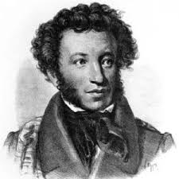

© А.С.Пушкин

Талисман
Там, где море вечно плещет
На пустынные скалы,
Где луна теплее блещет
В сладкий час вечерней мглы,
Где, в гаремах наслаждаясь,
Дни проводит мусульман,
Там волшебница, ласкаясь,
Мне вручила талисман.
Элегия
Безумных лет угасшее веселье
Мне тяжело, как смутное похмелье.
Но, как вино — печаль минувших дней
В моей душе чем старе, тем сильней.
Мой путь уныл. Сулит мне труд и горе
Грядущего волнуемое море.
Но не хочу, о други, умирать;
Я жить хочу, чтоб мыслить и страдать;
И ведаю, мне будут наслажденья
Меж горестей, забот и треволненья:
Порой опять гармонией упьюсь,
Над вымыслом слезами обольюсь,
И может быть — на мой закат печальный
Блеснет любовь улыбкою прощальной.